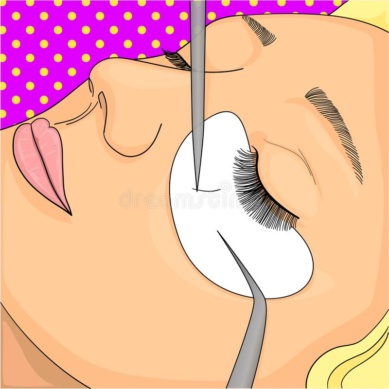

Service Explanations
Lashing is the art of placing a fanned extension on each individual lash.

Here I will explain my service and what I do for each.
- Full Lash Sets: Each Lash extension is placed on an individual natural lash. /li>
- Lash Baths: A shampoo treatment for your lashes. It is usally performed after a lash removal, before a full set or fill.
- Lash Removals: Using Lash glue removal, lash fans are removed.
- Lash Fill-ins: After a couple weeks lashes start to shed so a fill is to replace the shedded lashes.